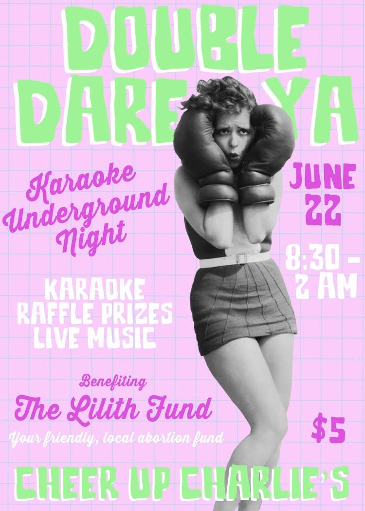

You’re a big girl now
You’ve got no reason not to fight!
We DOUBLE DARE YA
Indie/Punk Karaoke, live music from The Harms and Bitter Heart Society, and abortion funding.
Join The Lilith Fund for Reproductive Equity and The Karaoke Underground at Cheer Up Charlie’s on June 22.
$5 donation at the door
Karaoke Underground
The Harms – https://www.facebook.com/theharmsmusic
Bitter Heart Society – https://www.facebook.com/BitterHeaRtSociety
Check out our raffle sponsors:
The Hightower – http://thehightoweraustin.com/
AGBG – http://theabgb.com/
Mettle – http://mettleaustin.com/
Alamo Drafthouse Austin